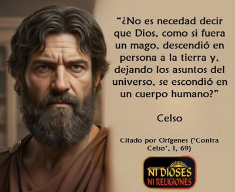

En la historia de las religiones no sólo encontramos apologistas que defendieron sus dogmas con fervor, sino también voces disidentes que se atrevieron a cuestionarlos con argumentos racionales. Y uno de esos personajes fue Celso, un filósofo griego del siglo II cuya obra más conocida, el «Discurso verdadero», constituye el primer gran ataque intelectual al cristianismo. Paradójicamente conocemos gran parte de su pensamiento, porque un teólogo cristiano, Orígenes, lo citó extensamente en su refutación titulada «Contra Celso», escrita décadas más tarde.


Celso no fue un tipo marginal, sino un pensador formado en la tradición platónica media, corriente que buscaba armonizar la herencia de Platón con las corrientes religiosas y filosóficas de su tiempo. Y como tal, valoraba la razón, la medida y el orden cósmico, a la vez que consideraba que las religiones tradicionales del Imperio romano ofrecían un marco estable para la convivencia social.
Desde esa perspectiva, el cristianismo emergente le parecía una secta irracional y peligrosa, enemiga tanto de la filosofía como de la cohesión del imperio. Los cristianos, según decía, rechazaban a los dioses ancestrales y despreciaban las costumbres comunes, mientras que predicaban sobre un «salvador crucificado» a los ignorantes, a los pobres y a las mujeres, en lugar de dirigirse a quienes buscaban la sabiduría mediante la razón.
Y uno de los blancos principales de Celso fue la doctrina cristiana de la encarnación. Para él era absurdo pensar que un dios verdadero, eterno e incorruptible, pudiera descender a la tierra y encerrarse en un cuerpo humano frágil y perecedero. Más aún, consideraba grotesco que ese dios encarnado, hubiese terminado martirizado y ejecutado como un delincuente común. Desde su perspectiva filosófica, esto no podía ser sino una ridícula superstición, un mito indigno de una divinidad.
Y Celso fue directo, atacando los fundamentos esenciales del cristianismo:
La encarnación, ya mencionada, como incompatible con la noción de un dios perfecto.
Los milagros, a los que veía como trucos engañosos, indignos de un ser racional.
La resurrección, absurda desde el punto de vista filosófico y carente de evidencia.
La exclusividad del «Dios» cristiano, intolerante frente al pluralismo religioso del imperio.
En resumen, veía en el cristianismo un movimiento que apelaba a la credulidad y la ignorancia, pero que además fomentaba la división social, amenazando el orden político.
Sin embargo, es importante subrayar que Celso no era ateo. Muy al contrario, defendía una religiosidad tradicional y un politeísmo moderado bajo la influencia platónica. Para él, cada pueblo tenía sus dioses y rituales, y todos formaban parte del orden universal. El politeísmo, interpretado filosóficamente, no era un caos de supersticiones, sino un reflejo múltiple de lo divino, compatible con la razón. Rechazaba, eso sí, el exclusivismo del cristianismo y del judaísmo, porque rompían con esa visión integradora.
Resulta entonces interesante preguntarnos: ¿Qué diría un ateo moderno sobre Celso? —Aunque un ateo contemporáneo no compartiría la defensa del politeísmo ni del trasfondo religioso de Celso, sí encontraría en él un aliado parcial en la crítica al cristianismo. Hoy como ayer, los ateos coincidiríamos con Celso en varios puntos:
En que el cristianismo es una construcción irracional, sostenida en mitos incompatibles con la razón.
-
En que la idea de un dios encarnado, crucificado y resucitado carece de coherencia filosófica y científica.
Celso no podía aceptar que un dios supremo, eterno y perfecto se rebajara a habitar un cuerpo humano, frágil y mortal.
Consideraba absurda la idea de que «Dios» escogiera nacer de una mujer humilde en una aldea, en lugar de manifestarse con grandeza y dignidad.
Criticaba que los cristianos adoraban a «un hombre muerto» (Jesús crucificado), lo cual le parecía indigno de un dios verdadero.
En que la fe basada en milagros es una forma de superstición, no de conocimiento.
En que la exclusividad de una religión «verdadera» es una fuente de intolerancia y división social.
En otras palabras, Celso puede considerarse un precursor de la crítica racionalista a la religión, aunque lo haya hecho desde un marco distinto al del ateísmo.
Celso fue un filósofo que, desde la razón y la tradición cultural grecorromana, denunció el cristianismo como una superstición peligrosa y divisiva. Su rechazo a la encarnación, a los milagros y al exclusivismo religioso, resuena hoy con las críticas que muchos ateos modernos seguimos planteando, aunque Celso mismo nunca abandonó el terreno de la religiosidad.
[Godless Freeman]
Comentarios
Comments powered by Disqus